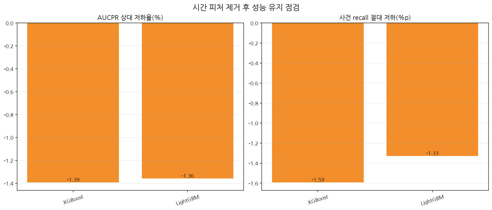
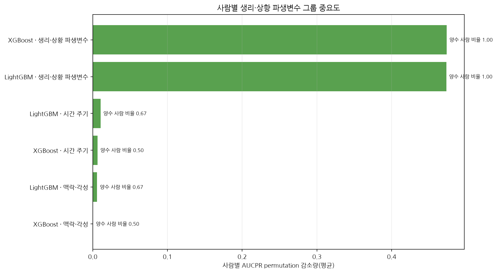

도전자 앵커: lightgbm · 운영 기준 모델: existing_hist_gradient_boosting · 감사 게이트: 통과 · 폰트: NanumGothic · 실행 시각: 2026-08-03T14:15:36+09:00




| 모델 | AUCPR | 사건 recall | 사건 F1 | 시간당 오탐 | Brier | ECE | 평가 범위 |
|---|---|---|---|---|---|---|---|
| 기존 Logistic | 0.24672272552005048 | 1.0 | 0.6634615384615384 | 0.09722222222222222 | 0.17462006968535265 | 0.36512159763983054 | existing_full_validation |
| 기존 HGB | 0.511066967178253 | 0.6231884057971014 | 0.7413793103448276 | 0.005555555555555556 | 0.06428751338937501 | 0.183715706265556 | existing_full_validation |
| XGBoost | 0.6590467755429836 | 0.4962831666335076 | 0.5957359039492824 | 13.04214970924849 | 0.11157079595179818 | 0.1044703094054443 | bounded_validation_sample |
| LightGBM | 0.6589559286274294 | 0.49800141076886906 | 0.5961740410743864 | 13.258824400903737 | 0.10838682122776676 | 0.0859090509998733 | bounded_validation_sample |
| 소프트 앙상블 | 0.6611066658813025 | 0.4995930474416249 | 0.6001716514389388 | 12.689358865143152 | 0.10931654062062347 | 0.09547523300275668 | bounded_validation_sample |
시간 피처 제거 후 AUCPR 상대 저하 ≤ 5.00%, 사건 recall 절대 저하 ≤ 5.00%, 파생변수 그룹의 사람별 반복 양수 비율 ≥ 80%를 사전에 고정했습니다.
| 모델 | AUCPR 저하 | recall 저하 | 파생변수 평균 drop | 양수 사람 비율 | 게이트 | 사유 |
|---|---|---|---|---|---|---|
| lightgbm | 0.0 | 0.0 | 0.4731594146262421 | 1.0 | True | PASS |
| xgboost | 0.0 | 0.0 | 0.473603921301764 | 1.0 | True | PASS |
ExtraTrees는 마지막 후보로 보류했습니다. 도전자와 기존 HGB는 평가 범위·임계값이 달라 직접 승격 비교하지 않았습니다.